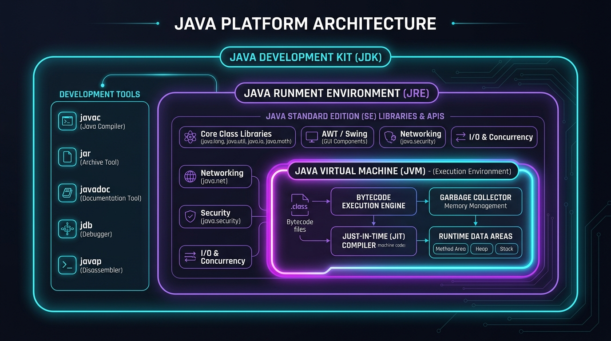
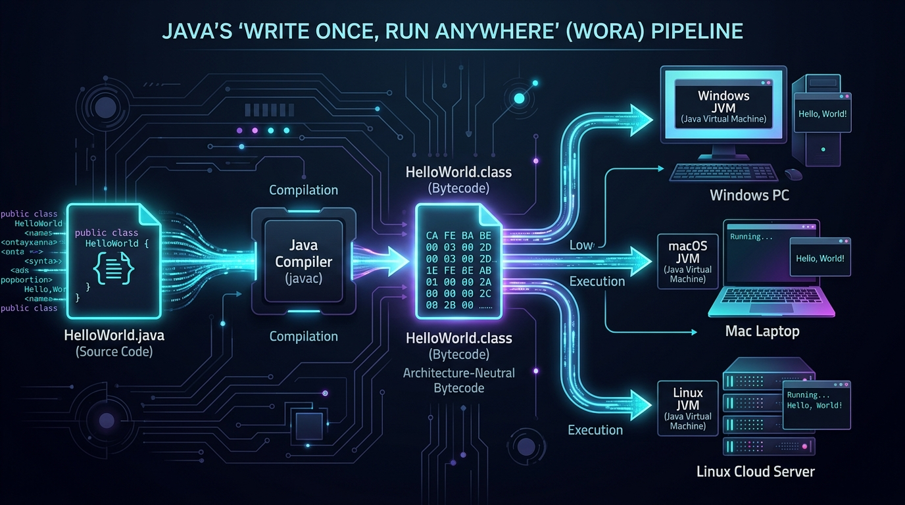

Before we write our first line of code, let's refresh three basic concepts about how computers function that you might not have thought about in a while:
- Hardware vs. Software: Hardware is the physical machinery you can touch (CPU, screen, keyboard). Software is the set of invisible instructions that tells the hardware what to do.
- RAM vs. Storage Disk: Your hard drive (SSD) is like a permanent bookshelf where files sleep. RAM (Memory) is your active working desk—programs only execute when loaded into RAM!
- The Binary Reality: Processors only understand tiny electrical switches that are either ON (
1) or OFF (0). Everything we type in Java will eventually become patterns of 1s and 0s!
1. What is Programming?
Think of a computer as an extraordinarily fast, obedient assistant who has zero common sense. A computer cannot guess what you meant. It only does exactly what you tell it to do, down to the tiniest detail.
If you tell a human friend: "Make a peanut butter sandwich," they instinctively grab two slices of bread, open the jar with a knife, spread the peanut butter, and press the slices together.
If you give that exact same command to a computer robot without detailed instructions, it will crash or smash the unopened glass jar onto the kitchen floor! Why? Because you didn't say:
1. Open bread bag → 2. Extract slice #1 → 3. Unscrew jar lid counter-clockwise → 4. Dip knife blade 2 inches → 5. Apply peanut butter across bread face.
Programming is simply writing that exact, unambiguous sequence of steps.
Because computers only understand electrical switches representing binary numbers (0s and 1s), we use high-level programming languages like Java to write instructions in human-readable terms.
2. The Structured (Procedural) Programming Paradigm
In the early decades of software engineering (1960s–1980s), programs were written using the Structured Programming Paradigm (languages like C, Pascal, and BASIC).
In structured programming, a problem is solved by breaking it down into a sequence of top-to-bottom steps, organized into small subroutines or functions (procedures).
| Characteristic | How Structured Programming Works |
|---|---|
| Primary Focus | Action / Algorithm first ("What functions do we need to execute?") |
| Data Organization | Data is passive and stored separately in variables. Functions grab data, change it, and send it back. |
| Control Structures | Relies strictly on Sequence (Step 1 → 2), Selection (if / else), and Iteration (loops). Replaced dangerous GOTO jumps. |
| Major Limitation | Global Data Vulnerability: As applications grow to millions of lines, any function can accidentally modify shared variables, causing silent bugs that are nearly impossible to track down. |
Imagine an airport management system built purely with structured procedures. If an engineer working on baggage claim accidentally modifies a global variable named flightStatus, a plane might get marked as "Departed" while passengers are still boarding! Data had no protective walls around it.
3. The Object-Oriented Programming (OOP) Paradigm
To solve the chaos of large structured programs, computer scientists invented Object-Oriented Programming (OOP). Java is one of the world's premier object-oriented languages.
Instead of viewing a program as a list of instructions acting on exposed data, OOP views a software application as a community of Objects collaborating together.
Look around you right now: your phone, your laptop, a water bottle, your instructor—these are all objects in the real world!
Every single object has two fundamental characteristics:
- 1. State (Attributes / What it HAS): A phone has a brand (Apple), model (iPhone 16), battery level (84%), and screen size (6.1").
- 2. Behavior (Methods / What it DOES): A phone can ring, send a text, take a photo, or restart.
| Concept | Structured Programming | Object-Oriented Programming (Java) |
|---|---|---|
| Philosophy | Function-oriented: Focuses on verbs (actions). | Data-and-Behavior bundled: Focuses on nouns (entities). |
| Data Security | Low. Data moves freely between functions. | High (Encapsulation). Data is private; can only be modified via authorized methods. |
| Code Reusability | Moderate (copy-pasting functions). | Extremely high via Inheritance, Polymorphism, and Modular Classes. |
| Real-World Modeling | Difficult to translate complex business models. | Natural: Customer, Invoice, BankAccount, Airplane map directly to classes. |
4. The Java Platform & Its Architecture
Java was created in 1995 by James Gosling and his team at Sun Microsystems (now Oracle). Unlike traditional languages like C and C++ which compile code directly into raw machine instructions specific to one CPU (e.g., Intel x86 or ARM), Java introduced a radical new architectural innovation: The Virtual Machine.
[ Source Code (.java) ]
│
│ (Compiled by 'javac')
▼
[ Intermediate Bytecode (.class) ] <-- Independent of any operating system!
│
┌─────┴────────────────────────┐
▼ ▼ ▼
[ Windows JVM ] [ macOS JVM ] [ Linux JVM ]
│ │ │
[ Windows Machine Code ] [ Apple Silicon / Intel Code ] [ Linux Machine Code ]5. The Big Three: JVM vs. JRE vs. JDK
One of the biggest confusions for beginners is deciphering these three acronyms. Let's make this crystal clear once and for all:
JDK contains JRE, which in turn contains JVM!
JDK > JRE > JVM
| Component | Full Name | What It Contains & What It Does | Who Needs It? |
|---|---|---|---|
| JVM | Java Virtual Machine | The software computer that actually executes compiled Java Bytecode. It translates bytecode into CPU-specific machine instructions at runtime using the Just-In-Time (JIT) Compiler. | The computer hardware running the app. |
| JRE | Java Runtime Environment | Contains the JVM PLUS standard library classes (e.g., math utilities, window drawing, network drivers, date parsers). | End-users who only want to play or run Java apps. |
| JDK | Java Development Kit |
Contains the JRE + JVM PLUS developer tools:
• javac (The Java Compiler)
• jar (Archiving and packaging tool)
• jdb (Debugger)
• javadoc (Documentation generator)
|
YOU! (Software Developers who write code). |

6. "Write Once, Run Anywhere" (WORA)
In C or C++, if you compile a program on Windows 11 with an Intel processor, the resulting .exe file cannot run on a MacBook or an Ubuntu Linux server. You must re-compile your code separately for every operating system.
Java solves this with Bytecode.
When you run javac HelloWorld.java, the output is not machine code. It is a file named HelloWorld.class filled with compact instructions designed for the imaginary universal computer: the JVM.

Every single compiled Java .class file in the world begins with the exact same four hexadecimal bytes in its binary header: 0xCAFEBABE!
James Gosling and the original Java team created this as a tribute to coffee and software craft.
7. Downloading & Installing the Java Development Kit (JDK)
To begin building Java applications, you need a modern JDK installed on your operating system.
-
Download a Production JDK Distribution
Visit Eclipse Temurin (Adoptium) or Oracle's official JDK portal. Download the latest Long Term Support (LTS) or active release installer for your OS (Windows x64 MSI Installer, macOS PKG, or Linux tar.gz).
-
Run the Installer
Follow the installation wizard. Keep the default path (usually
C:\Program Files\Eclipse Adoptium\jdk-XX...on Windows). Make sure to check the option: "Set JAVA_HOME variable" and "Add to PATH" if prompted! -
Understanding Environment Variables:
JAVA_HOMEandPATHWhat is
PATH? When you open a terminal and type a command likejavac, Windows searches the folders listed in yourPATHvariable. If the JDK'sbinfolder isn't inPATH, Windows throws the error: "'javac' is not recognized as an internal or external command." -
Verify in Terminal
Open Windows PowerShell or Command Prompt and run:
Command Prompt / PowerShelljavac -version java -versionIf you see version numbers printed (e.g.
javac 21.0.xoropenjdk 25), your development environment is fully operational!
8. Writing, Compiling, and Running Your First Program
Let's create the time-honored traditional first program for every software engineer: HelloWorld!
public class HelloWorld {
public static void main(String[] args) {
System.out.println("Hello, World! Welcome to Java Programming.");
}
}How to Compile and Execute:
Open your terminal in the directory where you saved HelloWorld.java and type:
# Step 1: Compile the source file into bytecode (.class)
javac HelloWorld.java
# Step 2: Run the compiled bytecode on the JVM
java HelloWorldExpected Console Output:
Hello, World! Welcome to Java Programming.9. Line-by-Line Code Anatomy
Every single word in a Java program has an exact purpose. Let's dissect our program with surgical precision:
| Code Fragment | What It Means in Plain English |
|---|---|
public |
Access Modifier: Means this class or method is accessible to everyone from anywhere, including the JVM. |
class |
Keyword: Declares a new blueprint/container for code. In Java, everything must live inside a class! |
HelloWorld |
Class Name: Must match the exact filename on disk: HelloWorld.java (case-sensitive!). |
{ ... } |
Curly Braces (Blocks): Marks where the class or method begins and ends. |
static |
Means the method belongs to the class itself, so the JVM can run it directly without needing to create an instance object first. |
void |
Return Type: Means this method does its job and returns no data value back when it finishes. |
main(...) |
The Gateway: The exact signature the JVM searches for to kick off your program. Without main, Java cannot start! |
String[] args |
An array of textual arguments that can be passed into the program from the command prompt when launching. |
System.out.println() |
• System: A built-in class provided by Java.• out: The standard output stream (your terminal screen).• println: Prints the given text and automatically jumps to the next line.
|
; |
Semicolon: The period at the end of a sentence in Java. Every executable statement must end with a semicolon! |
10. Beginner Traps & How to Avoid Them
Java treats uppercase and lowercase letters as completely different things!
System with a capital 'S' works. system with a lowercase 's' produces a compilation error.
main must be lowercase; Main will not be recognized as the entry point!
If your code says public class HelloWorld, your file must be saved as HelloWorld.java.
Saving it as helloworld.java or Program.java will trigger:
error: class HelloWorld is public, should be declared in a file named HelloWorld.java
When compiling, specify the full file: javac HelloWorld.java.
When running, provide ONLY the class name: java HelloWorld.
If you type java HelloWorld.class, Java looks for a class named "class" inside a package named "HelloWorld" and fails with ClassNotFoundException!
11. Executive Quick-Recap & Cheat Sheet
Need a quick revision before the post-quiz or tomorrow's class? Here is everything distilled down to the bare essentials:
⚡ The 30-Second Mental Model
You write human-readable code in a text file (.java). The Java Compiler (javac) translates it into universal, architecture-neutral instructions called Bytecode (.class).
When you type java ClassName, your operating system's native JVM reads that bytecode and directs the local processor to execute it line-by-line starting at main().
Core Syntax at a Glance
// 1. Class Blueprint (Must match filename: MainApp.java)
public class MainApp {
// 2. Entry Point Method (Mandatory signature)
public static void main(String[] args) {
// 3. Print with auto-newline
System.out.println("Hello, World!");
// 4. Print without newline (cursor stays on same line)
System.out.print("Loading... ");
System.out.println("Done!");
}
}Plain-English Glossary
The software engine that actually runs compiled Java bytecode on your specific operating system.
The complete toolkit for programmers, containing the compiler (javac), runtime, and debugger.
Intermediate, universal computer code produced by the compiler that runs on any computer equipped with a JVM.
Java's core promise that code compiled on one operating system executes without modification on any other OS.
Bundling data and the methods that operate on that data inside a class, protecting data from unauthorized outside changes.
A high-performance component inside the JVM that compiles frequently used bytecode directly into native machine code at runtime.
12. Summary & Interactive Self-Checks
Before moving on to the class tasks and post-quiz, test your memory on these three quick questions. Click each card to reveal the answer:
❓ Question 1: What is the single biggest difference between Structured and Object-Oriented programming?
❓ Question 2: Why do software developers need the JDK rather than just the JRE?
javac compiler required to translate human-readable .java code into runnable .class bytecode.
❓ Question 3: If your code compiles with `javac Student.java`, why will `java Student.class` fail?
java runtime launcher takes a class name, not a file path. Specifying Student.class causes the JVM to search for a nested class named class inside package Student and fails with ClassNotFoundException. Always run: java Student.